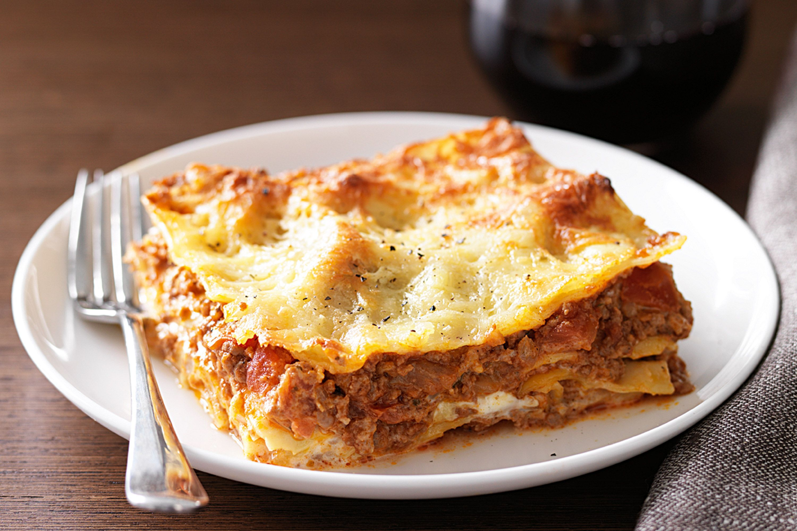

Lasagne Recipe

Description
This lasagna is great for a quick meal for one!
Ingredients
- 2 lasagna noodles
- 1.5 cups water
- 0.25 cup marinara sauce
- 0.25 chopped cherry tomatores
- 0.5 tablespoon chopped fresh basil
- 0.5 cup shredded low-fat mozzarella cheese
Steps
- Break each lasagna noodle into 6 rectangular pieces. Place noodles in a 4-cup
microwave-safe bowl. Add water, making sure noodles are covered and water level
is about halfway up the bowl. Place the bowl on a microwave-safe plate.
- Cook in the microwave on high for 2 minutes. Stir pasta quickly to keep it from
clumping. Cook in 2-minute increments, stirring in between, and emptying any
water that has boiled over onto the plate. Repeat until lasagna is tender yet
firm to the bite, about 6 minutes total. Drain noodles, reserving 1 tablespoon
of the cooking liquid. Return noodles and reserved liquid to the bowl.
- Stir marinara sauce and chopped tomatoes into the bowl, mixing until incorporated.
Sprinkle on basil, and then mozzarella cheese. Cover surface of the bowl with a
paper towel to prevent splatter and microwave until cheese is completely melted
and tomato sauce is warmed, 1 to 1 1/2 minutes. Serve immediately.